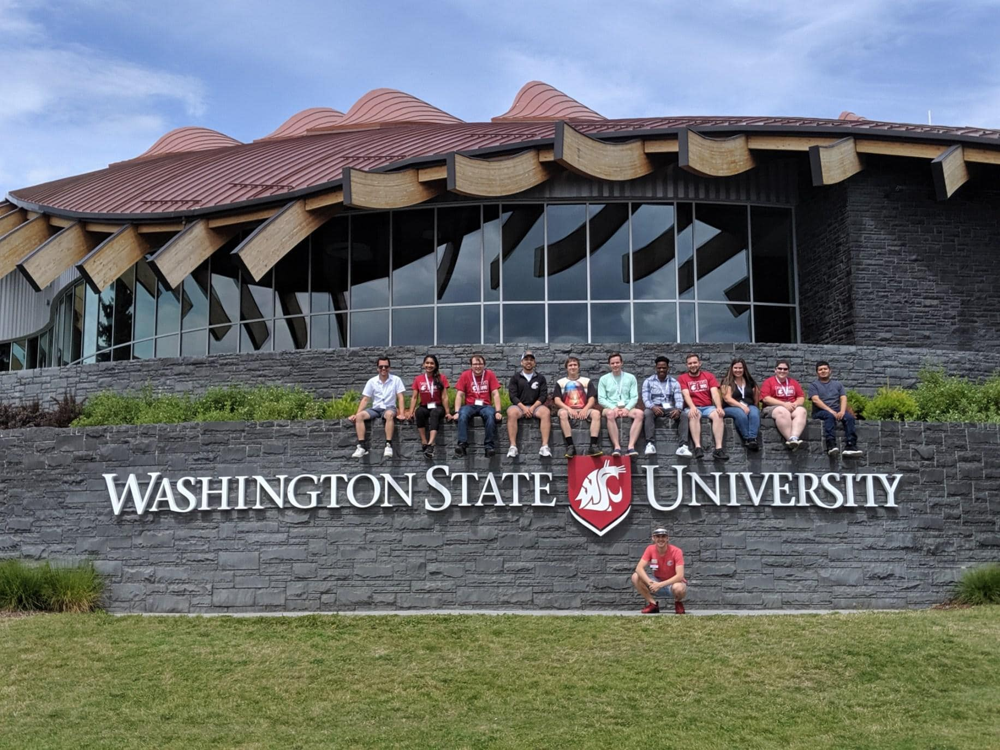

About Me
I was born and raised in Ethiopia and came to the States in 2016 at age of 22. In Ethiopia, I have gone on to earn a degree in plant science from Bahir-Dar University. Therefore, when I came to the states, I continued with my studies and got my second bachelor's from Washington State University in Agricultural Biotechnology. But never done computer classes. As a result, this is my first-time doing work related to computer studies.
contact me
I prefer to be contacted through email however, if you are not able to reach me through email, you can contact me through phone or linkedin as well.
- 2065035342
- samuelsholib12@gmail.com
- linkden https://www.linkedin.com/in/samuel-sholib-2611271b1/
Work experience
My first ever professional job was at the Omo-Kuraz Sugar factory in Ethiopia. I was a field coordinator there but once I moved to the states, I have done a couple of different jobs. For instance, I was an unarmed security guard at Securitas Security USA and a driver for Lyft(Lyft Inc).